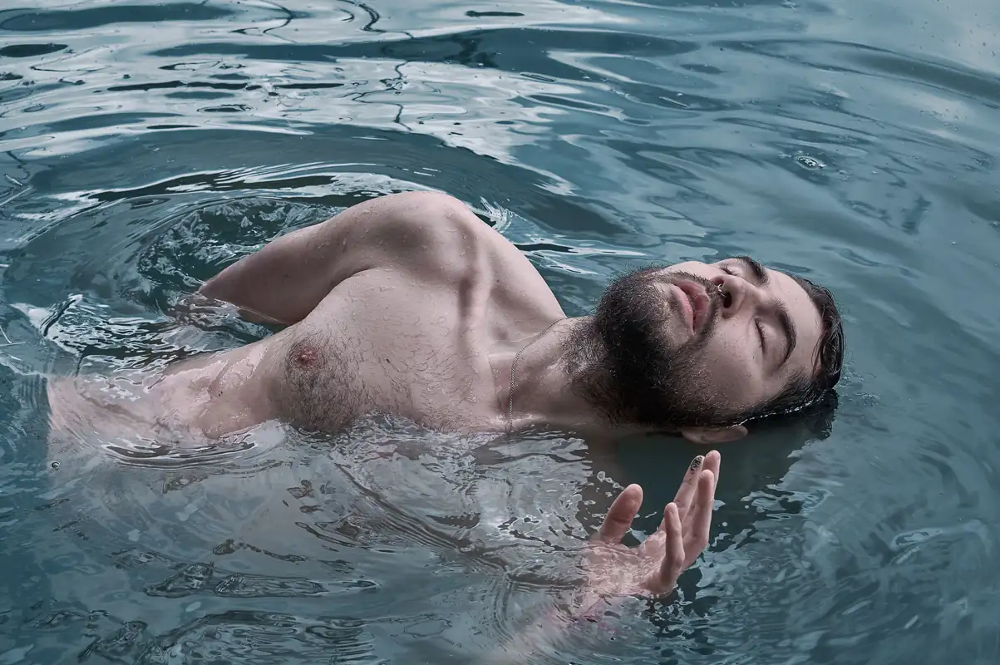

SELECTED
ARTWORKS



ETHEREAL
Between 2019 and 2022, these personal projects became a quieter space for exploration. Created in forests, rivers and open landscapes, this body of work reflects a deeper connection with nature, introspection and identity. Through organic textures, natural light and human presence, each image explores the relationship between the external world and the inner self.
View
ATMOSPHERIC
Atmospheric is a collection of experimental black and white works created through symbolism, contrast and visual experimentation. Each image exists as its own narrative — exploring surreal characters, cinematic spaces and unexpected compositions. This series moves between mystery, emotion and imagination.
View